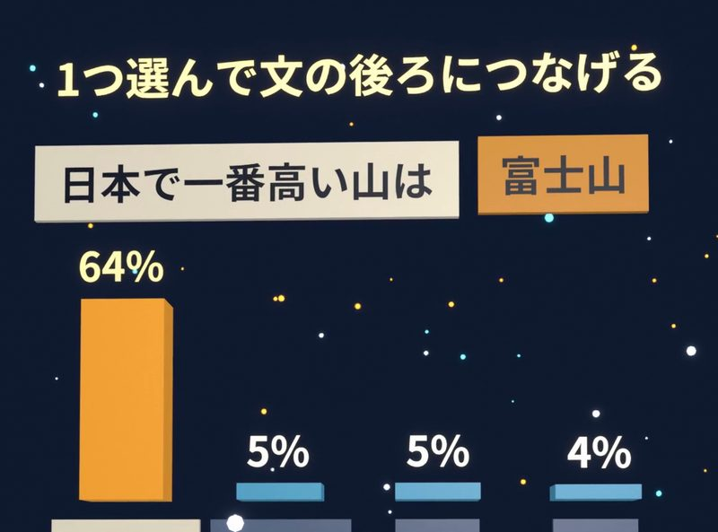
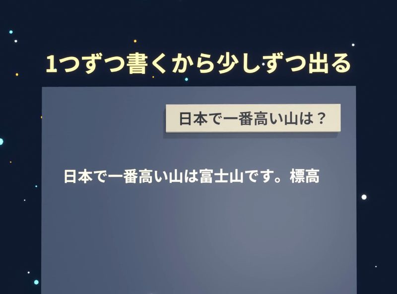
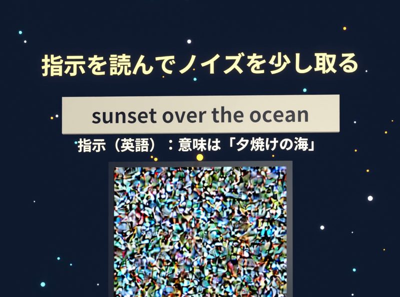
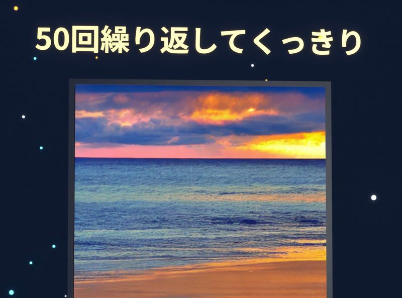
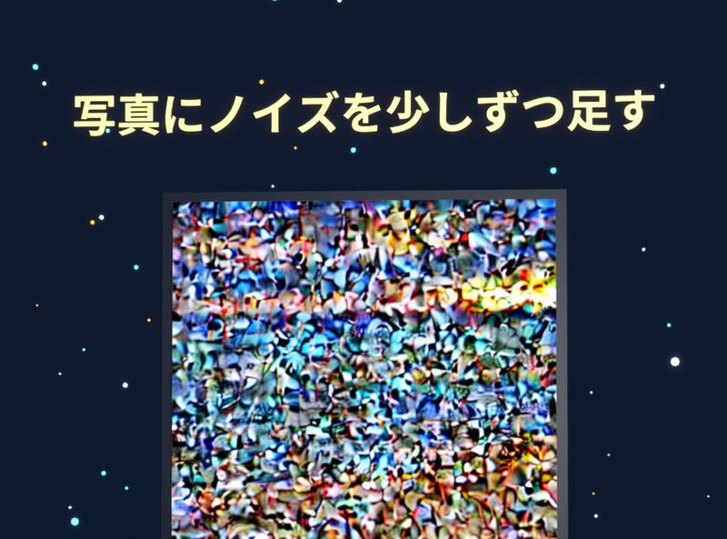
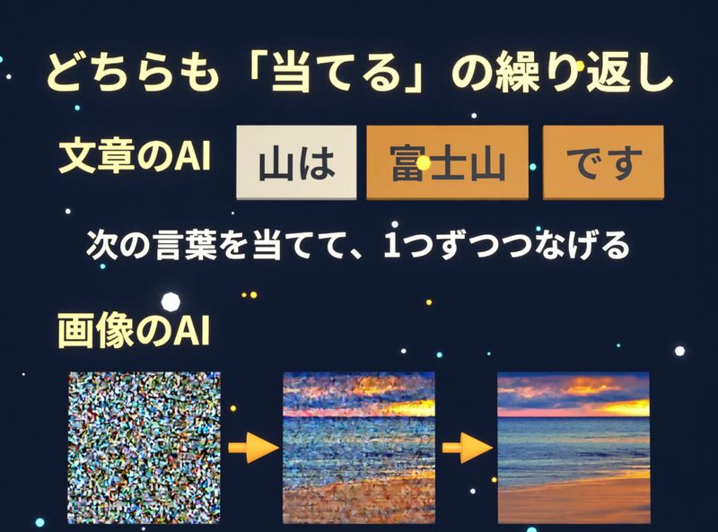

ChatGPTのような文章のAIは、次の言葉を1つずつ当てて答えを書きます。Stable Diffusionのような画像のAIは、砂嵐のような画像からノイズを少しずつ取り除いて絵を作ります。公開されているAIを実際に動かした結果で、2つの仕組みを説明します。
ChatGPTは、答えの文章を最初に全部考えてから書いているわけではありません。ChatGPTは、次の言葉を1つずつ当てながら、答えを書いています。
文章や画像を作るAIの中身は、人工ニューロンを何層にもつないだニューラルネットワークです（仕組みはニューラルネットワークとはで説明しています）。
文章のAIは、次に来る言葉の確率を計算する
公開されている日本語のAI（Sarashina2.2 0.5B instruct）を実際に動かして、「日本で一番高い山は?」と聞きました。ニューラルネットワークは、文を読んで、次に来る言葉の候補ごとに、確率を計算します。
AIが「日本で一番高い山は」まで書いたとき、「富士山」の確率は約64%でした。ほかの候補の確率は、どれも約5%以下でした。ChatGPTのような文章を作るAIは、確率の高い候補から言葉を1つ選んで、文の後ろにつなげます。

選んだ言葉をつなげて、もう一度読み直す
文章のAIは、選んだ言葉をつなげた文をもう一度読んで、次の言葉の確率を計算します。AIは、言葉を選んでは読み直す作業を、答えが終わるまで繰り返します。
ChatGPTの画面に文字が少しずつ出てくるのは、ChatGPTが答えを1つずつ書いているからです。

ニューラルネットワークが次の言葉を当てられるのは、学習のときに、大量の文章で、文の続きを当てる練習をしたからです。予測が外れるたびに、AIは重みを少し直しました（くわしくはAIの学習とは）。
画像のAIは、砂嵐のような画像から始める
Stable Diffusionという画像を作るAIは、拡散モデルという方法を使っています。拡散モデルは、テレビの砂嵐のような、ざらざらの点だけの画像から始めます。
ニューラルネットワークは、「夕焼けの海」という意味の英語の指示（sunset over the ocean）を読んで、砂嵐の中のどの点がノイズなのかを予測し、ノイズを少しだけ取り除きます。ノイズを少し取り除くと、画像の中に、ぼんやりした色のかたまりが現れます。

ニューラルネットワークは、ノイズを取り除く作業を何十回も繰り返して、くっきりした画像に仕上げます。今回は50回繰り返しました。

画像のAIは、ノイズを足す逆の作業で練習する
ニューラルネットワークがノイズを取り除けるのは、学習のときに、逆の作業を練習したからです。学習では、きれいな写真に、ノイズを少しずつ足して、砂嵐にしていきます。そして、ニューラルネットワークは、写真に足されたノイズを当てる練習を、大量の写真と説明文で繰り返します。

どちらのAIも「当てる」ことを繰り返している
文章を作るAIは、次の言葉を当てて、1つずつつなげています。画像を作るAIは、砂嵐からノイズを少しずつ消しています。どちらのAIも、ニューラルネットワークが「当てる」ことを何度も繰り返して、答えや画像を作っています。

ChatGPTのようなAIが次の言葉を選ぶ仕組みは、ChatGPTが文章を作る仕組みでも説明しています。
出典と実演の条件
- 文章のAIが次の言葉（トークン）を1つずつ予測すること、学習で続きを当てる練習をすること：OpenAI ヘルプ「How ChatGPT and our foundation models are developed」
- 「富士山」約64%（63.9%）、次の候補は5.1%・5.1%・4.5%：Sarashina2.2 0.5B instruct（SB Intuitions、MIT ライセンス）を、毎回いちばん確率の高い候補を選ぶ設定で動かした結果
- 拡散モデル：Ho ほか（2020）
- 画像：Stable Diffusion v1.5（CreativeML OpenRAIL-M ライセンス）で作った画像。50回は diffusers の初期値。途中の画像は、各回の途中の数字を画像に直したもの。ノイズを足す画像は、できた画像に同じ計算でノイズを足したもの
- Stable Diffusion は、実際には写真を縮めた数字の上で作業します（説明では省きました）
この記事は、短尺動画シリーズ「酒のつまみになるAI」の回を、読み物として書き直したものです。